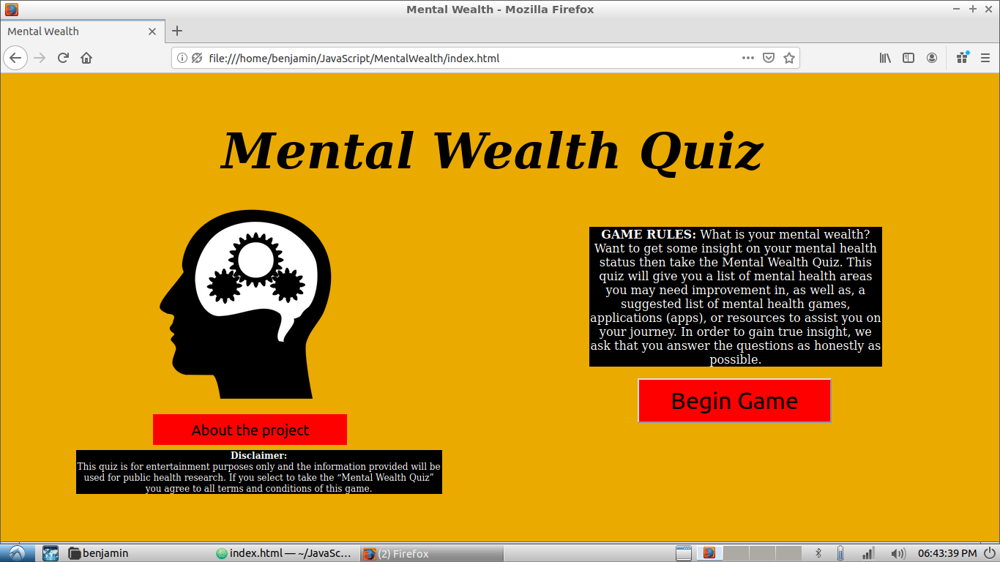

He is a third-year undergrauate at Georgia Tech and
an aspiring computational biologist tackling the next
challenges in medical science.
Follow his professional and personal journey as a student, scientist,
soccer player, and Asian American.
Biologist
Computer Scientist
Scholar
Computer Scientist
Scholar
asdf
Biology

Microglia dynamics: the project aims to
understand microglial activation in Alzheimer's Disease
and use bio-regulating molecules to control microglial
activation in hopes of improving physiological outcomes.
Cell cultures and mouse animal models are used to
test the effects of various cytokine inhibitors
in microglial inflammatory pathways and examine
the impact on neuronal viability. Results are characterized
by quantifying levels of protein expression. Analysis
is conducted using computational tools such as
MATLAB, ImageJ, and Zen Blue.
Computer Science

Mental Wealth: the project is a Facebook Instant Game developed with a HTML/CSS/JavaScript front-end and JavaScript back-end. The game incorporates a quiz that gives mental health diagnosises amid the COVID-19 crisis. Benjamin works on a team of Emory and Georgia Tech students and manages the front-end and back-end programming for the project.
Programming Languages
| Language | Python | Java | MATLAB | ImageJ | R |
| Start Date | January 2019 | August 2019 | January 2019 | January 2019 | January 2020 |